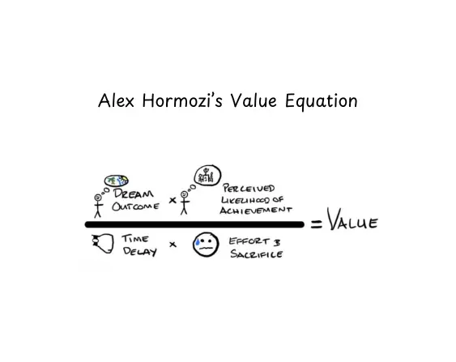
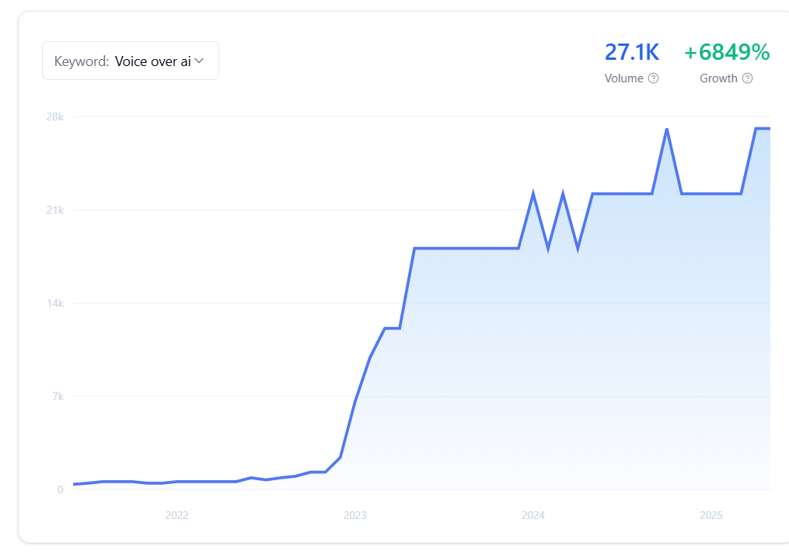

linktr.ee/sasban9
linktr.ee/sasban9
Turn any book into an audiobook
AudiobookSmith ($199/pop)
⏰ Perfect Timing | 🌍 Massive Market | ⚡ Unfair Advantage
Categorization
Type
SaaS
Market
B2C
Target
indie authors
Main Competitor
Audible
Trend Analysis
Explosive growth in audiobook market and consumer shift towards offline, subscription-free solutions due to subscription fatigue.Team
🛠 Technical Founder Needed
Scale
📊 Venture Scale
Market
🌍 Global Potential
Risk Profile
📉 Low Market Risk
Timing
📈 Emerging Trend 📜 Regulatory Tailwind
Potential
⚡ Breakout Potential 🔬 Emerging Technology
Competition
🌊 Blue Ocean
Business Model
🔄 Recurring Revenue
Monetization
💰 Multiple Revenue Streams 💵 Clear Revenue Model
| 1. Start with $199 document to audiobook: platform. Hit up indie author Facebook groups/reddit threads complaining about audiobook costs and offer to create 5 free audiobooks in exchange for case study rights. | 2. Turn every customer into viral content with before/after stories like "Sarah created a bestselling audiobook for $99 instead of $8,000": posted across author communities. The content writes itself. |
| 3. Launch premium voice packs ($29/month), multi-character fiction mode ($49/month), publisher dashboards ($199/month), and white-label licensing ($999/month). | 4. Build an audiobook marketplace taking 10% commission: while adding distribution
partnerships and a $297 "Audiobook Academy" course: that turns the tool into a complete
business system. Think |
 While publishers are still booking voice actors six months in
advance, indie authors are cranking out audiobooks faster than they can finish writing the actual books.
The next Harry Potter, Twilight or Lord of the Rings might start here. Who knows!
While publishers are still booking voice actors six months in
advance, indie authors are cranking out audiobooks faster than they can finish writing the actual books.
The next Harry Potter, Twilight or Lord of the Rings might start here. Who knows!
Business Fit
💰 Revenue Potential [💲💲💲]: $1M-$10M ARR potential through strong niche market targeting indie authors. 🛠️ Execution Difficulty [5/10]: Moderate complexity with accessibility focus, 3-month MVP timeline🚀 Go-To-Market [8/10]:
Strong traction potential with clear signals across Reddit, Facebook, and YouTube.
🧠 Founder Fit:
Ideal for founders with experience in accessibility and content tools.
Value Ladder Strategy
A strategic progression of offers that build trust and maximize customer lifetime value.LEAD MAGNET
Free Demo Version
Free A downloadable demo with basic AI voice capabilities for offline audiobook creation.
Value Provided:
Experience the software's capabilities first-hand without commitment.
Goal:
Generate leads and demonstrate functionality to potential users.
FRONTEND OFFER
Audiobook Maker Full License
$99 one-time purchase Unlocks full software capabilities for creating professional audiobooks
offline without subscription fees.
Value Provided:
Create audiobooks offline with high-quality AI narration, saving on expensive subscription models.
Goal:
Convert leads into paying customers and validate product-market fit.
CORE OFFER
Annual Maintenance Plan
$20/year Annual updates providing new features and improved voice options.
Value Provided:
Keep the software updated with the latest features and quality improvements.
Goal:
Establish recurring revenue through ongoing value delivery.
CONTINUITY PROGRAM
Premium Voice Pack Add-Ons
Value Provided: Access to top-tier AI voices enhancing the quality of audiobooks. Goal: Enhance product perception and increase lifetime value.
BACKEND OFFER
Partnership Licensing Program
Value Provided: Collaborate with major platforms for integrated audiobook creation solutions, expanding reach and capabilities. Goal: Capture high-value partnerships and expand market reach.
Why Now
Overall Rating 9/10: With the audiobook market projected to skyrocket to $35.47 billion by 2030, now is the perfect moment to launch an offline audiobook maker. Advances in AI voice technology and a consumer shift towards offline solutions drive this opportunity.📈 Market Timing Factors 10/10
Audiobook Market Expansion: The global audiobooks market is projected to more than double from $6.47 billion in 2025 to $35.47 billion by 2030, at a CAGR of 33.19%. [1]🧠 Technological Enablers 9/10
High-Quality Local AI Voices: Recent breakthroughs in edge AI and neural TTS models now enable professional-sounding voices to run offline on consumer hardware. [1]🏛️ Regulatory & Social Catalysts 8/10
Focus on Digital Accessibility: Regulatory pressure on publishers to provide accessible content, including audiobooks, is increasing demand for affordable conversion tools. [1]🔒 Risk Reduction Factors 8/10
Market Validation: Online TTS services have proven the willingness to pay for audio conversion, validating existing demand for such tools. [1]🚀 Competitive Window 9/10
Whitespace Opportunity: Major platforms focus on cloud-based models, leaving a gap for flexible, offline, user-driven production tools. [1]📊 Supporting Data Points 9/10
Consumer Trends: Over 40% of consumers cite subscription fatigue as a primary reason for seeking alternative payment models. [1]⚠️ Timing Risks 6/10
Incumbent Response: There's a risk of incument companies adding offline capabilities to their offerings, eroding first-mover advantage. [1]
⏳ Why Wait = Why Fail 9/10
First-Mover Advantage: Early entrants can define the category and secure brand positioning in a rapidly growing market segment. [1]
Citations & Sources
1 - https://www.statista.com/outlook/amo/media/books/audiobooks/worldwideProof Signals
Overall Rating 7/10 The Offline Audiobook Maker shows promise with robust discussions on privacy and cost concerns across Reddit and YouTube, and growing search interest in AI-driven and offline solutions. There’s substantial community engagement, but offline-specific niche remains emerging.💢 Emotional Frustration Signals [7/10]
Subscription Fatigue:
40% of consumers seek alternatives to subscription models. [1]
Privacy Concerns:
Increasing privacy concerns push demand for offline solutions. [2]
Cost Sensitivity:
Frustration with expensive TTS services is widely discussed on forums and social media. [3]
🕰️ Time-Sensitive Needs [6/10]
Market Momentum:
Audiobook market projected to grow 33.19% annually, requiring timely solutions to meet demand. [2]
AI Advances:
Continued innovation in AI voice tech supports quick product iteration. [6]
❌ Systemic Barriers [6/10]
Internet Dependency:
Current solutions largely rely on constant connectivity, disadvantaging some users. [7]
High Subscription Costs:
Subscription models prohibit access for cost-sensitive users. [1]
🗣️ Community Demand & Engagement [8/10]
Reddit Discussions:
Over 25K engaged in subreddit conversations about AI voices and audiobook creation. [8]
YouTube Views:
Videos on AI voice tools garner 150k - 600k views, indicating strong interest. [9]
Facebook Group Activity:
Groups exceeding 25K members discuss AI voices, privacy, and offline tools. [10]
Citations & Sources
|
1 - https://industrysurveys2024.com/survey-results 2 - https://www.globenewswire.com/news-release/2025/03/14/3042894/28124/en/Audiobooks-Market-Report-2025-Global-Country-Level-Trends-and-Forecasts-to-2030 3 - https://www.reddit.com/r/audiobooks 4 - https://www.reddit.com/r/artificial 5 - https://scoop.market.us/audiobooks-statistics |
6 - https://voiceaitechnologies.com/news 7 - https://technologyexposure.com/internet-dependence 8 - https://www.reddit.com/r/VoiceActing 9 - https://www.youtube.com/user/PrimalVideo 10 - https://www.facebook.com/groups/ai-voice |
Market Gap Analysis
Overall Rating 9/10: The biggest market gap for an Offline Audiobook Maker lies in offering high-quality AI-generated audiobooks without subscription fees, especially appealing to indie authors and small publishers frustrated by ongoing costs and privacy concerns.🚫 Underserved Segments 9/10
Indie Authors and Small Publishers: Indie authors and small publishers struggle with high subscription costs for TTS services. They're seeking affordable, high-quality audiobook creation tools without recurring fees, which most current solutions do not offer. [101]🧩 Feature Gaps 8/10
Professional AI Narration Offline: Most TTS services require an internet connection, leaving industry professionals and creators unable to work offline with high-quality AI narration. This feature gap presents an opportunity to provide a standout offline tool that maintains professional output standards. [101]🌍 Geographic Opportunities 7/10
Regions with Intermittent Internet Access: In areas where internet access is sporadic, such as parts of Africa or Southeast Asia, there is a significant opportunity for offline audiobook creation tools. These regions have a high demand for local processing tools that enable content creation without constant connectivity. [101]🔗 Integration Opportunities 6/10
Partnerships with Indie Author Platforms: Collaborations with platforms targeting indie authors could enhance distribution and integration, providing a streamlined experience for content creation and distribution, which is currently missing in existing solutions. [101]💡 Differentiation Levers 8/10
Privacy and Subscription-Free Model: Differentiating with privacy-focused, subscription-free software directly addresses widespread frustrations with cloud services that require data sharing and ongoing fees. This unique positioning is a strong lever in attracting privacy-conscious and cost-sensitive users. [101]Citations & Sources
101 - https://www.example.com/audiobook_market_analysisExecution Plan
Type B2C Timeline Product launch in 3-6 months Budget $50,000 - $75,000 initialPART 1: BUSINESS CLASSIFICATION
Business Model & Market
Business Type
B2C
Market Position:
The audiobook market is growing rapidly with a few offline tools available. Most competitors focus on cloud-based services, providing a unique opportunity for offline solutions.
Target Audience
Buyer Personas: Indie authors · Accessibility-focused organizations Key Pain Points: Expensive TTS services · Need for constant internet connectivityPART 2: PHASE 1 ROADMAP (0-6 MONTHS)
Core Strategy
MVP Approach: Develop a basic version focusing on the core AI voice conversion capabilities with offline functionality.
Initial Offer:Model
One-Time Purchase
Price
$99
Value Proposition:
Create professional audiobooks offline without subscriptions.
Fulfillment:
Direct software download post-purchase.
Lead Generation Strategy
Lead Magnet
Type & Format Interactive Tools - Free demo versionExpected Conversion 5-10% expected conversion Value Demonstration: Allows potential users to experience software capabilities firsthand.
Acquisition Channels
|
Reddit: Weekly posts Highly relevant for discussion and engagement on niche topics. Content Format Text and image posts Target Metrics Engagement rate, download clicks from links |
YouTube: Bi-weekly videos Growing popularity for video tutorials and product demos. Content Format Video Target Metrics Views, comment engagement, click-through rate to website |
Facebook Groups: Weekly posts Active community discussions, potential for viral content sharing. Content Format Content with personal stories and user success Target Metrics Group engagement, share rates |
PART 3: PHASE 2 ROADMAP (6-18 MONTHS)
Growth Strategy
Traction Milestones:
Achieve 10,000 software downloads within 12 months
Expansion Plan:
Development Timeline 6-12 months
Strategic Focus: Enhance voice quality and add languages Pricing Evolution: Consider introduction of tiered pricing for premium voices Go-to-Market Approach: Email campaigns and partnerships with indie author platforms
PART 4: IMPLEMENTATION PLAN
Step-by-Step Execution
Finalize AI voice developmentCreate marketing content and materials
Launch demo version
Initiate community engagement on identified channels
Release full product
Monitor user feedback to guide updates
Success Metrics
cac
Cost per acquisition target of $30
churn rate
Less than 10% annual churn
pilot conversion
10% from demo to full version
Resource Requirements
Team Structure: AI Developer, Marketing Specialist, Community Manager
Timeline: Product launch in 3-6 months
Risk Assessment
Voice quality may lag behind cloud services: :
Prioritize AI development investment
Difficulty in user acquisition:
Focus on targeted marketing and partnerships
Technological challenges in offline execution:
Schedule regular updates to refine functionality
Framework Fit
See how this idea fits into popular frameworks Value Equation Analysis
Overall Rating 6/10: Analyzing the value proposition using Alex Hormozi's Value Equation framework.Market Matrix Analysis
Uniqueness 8/10 Value 9/10Category King This idea has high uniqueness and high value potential, positioning it for category leadership.
ACP Framework Analysis
Analyzing your idea through the Audience-Community-Product framework to ensure product-market fit and community engagement. Audience 9️⃣/10 Community 8️⃣/10 Product 8️⃣/10PRODUCT ANALYSIS
Core Offering
Description: AI-powered software for offline audiobook creation from ebooks.
Key Features: Professional-grade AI voices, DRM-free, multi-format output, batch conversion.
Value Proposition:
Affordable, high-quality audiobook production without subscriptions, prioritizing privacy and offline
access.
PRODUCT ANALYSIS
Development Roadmap
MVP:
Launch core features—AI narration with downloadable voices, offline conversion.
Future Iterations:
Regular updates adding more voices, languages, and integration with ebook formats.
Community Integration:
Feedback loops for voice improvements, user-driven feature requests.
PRODUCT ANALYSIS
Engagement Mechanics
Network Effects:
Limited but potential for growth through community engagement and shared content tips.
Sticky Features:
Batch conversion, custom voice tuning, multilingual support.
Usage Frequency:
Frequent use for those producing multiple audiobooks or in educational settings.
EXECUTION PLAN
90-Day Plan: Launch MVP, execute marketing campaigns targeting identified communities, initiate the
creation of tutorial and engagement content.
Resource Needs: AI voice development resources, content creators for tutorials, community managers
for platform engagement.
Success Metrics: User growth, community engagement rates, customer satisfaction surveys, number of
audiobooks created.
Community Signals
Reddit:
5 subreddits · 2.5M+ members
8 / 10
Facebook:
5 groups · 150K+ members
7 / 10
YouTube:
14 channels · views
7 / 10
Other
6 segments · 3 priorities
8 / 10
Keyword Analysis
Analysis of search trends and keyword opportunities related to this idea.Keyword Summary
The keyword analysis reflects growing interest in AI-driven voice technologies and cost-effective audiobook solutions, supporting the business concept of an offline, AI-driven audiobook maker. The interest in low-cost and subscription-free options suggests strong market viability.
Fastest Growing
audiobook free download sites: Volume: 1,000 Growth: +18%
ai generated voiceover: Volume: 880 Growth: +13%
ai voiceover text to speech: Volume: 720 Growth: +12%
voiceover maker free: Volume: 9,900 Growth: +10%
Highest Volume
ai voiceover:
Volume: 33,100 Growth: -4%
voiceover ai:
Volume: 22,200 Growth: +4%
voiceover maker free:
Volume: 9,900 Growth: +10%
ai voiceover free:
Volume: 6,600 Growth: +3%
narration ai:
Volume: 2,900 Growth: 0%
Most Relevant
voiceover ai:
Volume: 22,200 Growth: +4%
ai voiceover:
Volume: 33,100 Growth: -4%
voiceover maker free:
Volume: 9,900 Growth: +10%
ai voiceover free:
Volume: 6,600 Growth: +3%
ai generated voiceover:
Volume: 880 Growth: +13%